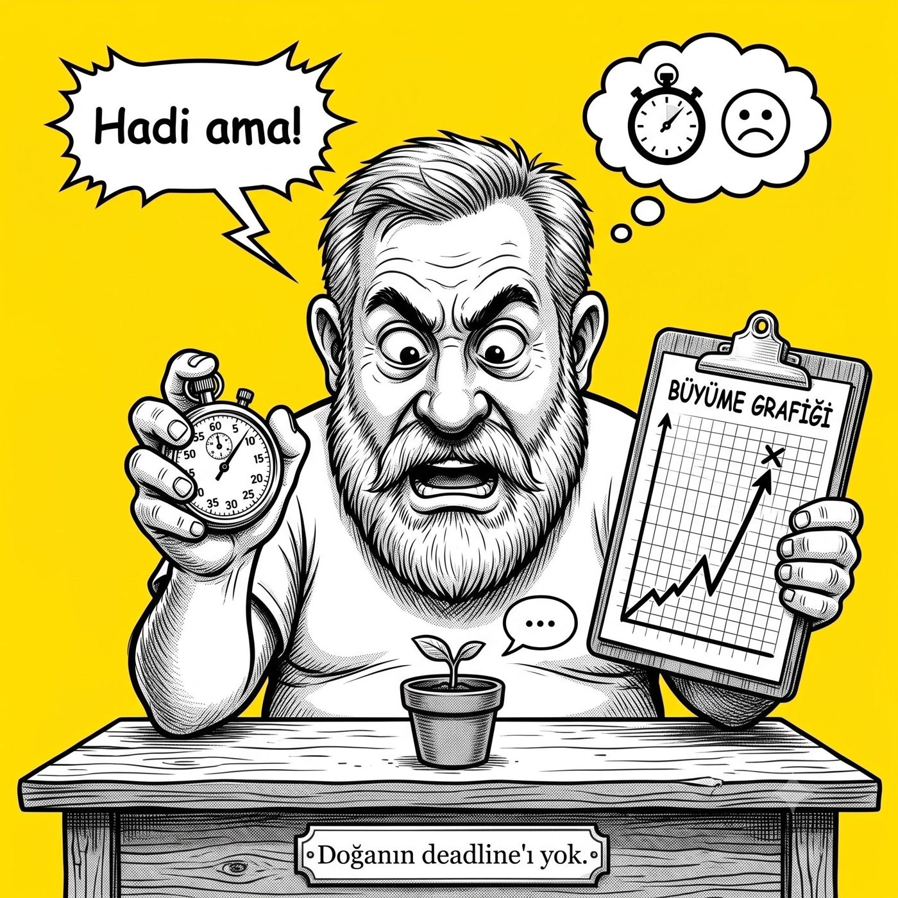

Hakkında
Kendi üzerimde bir deney yapıyorum.
Merhaba. Ben Murat. Hayatımın büyük bir kısmı sistemleri hızlandırmakla geçti — yazılım mimarileri, veritabanları, lojistik, e-ticaret. Zaman benim için hep "optimize edilecek" bir problemdi. Hâlâ da bu işin içindeyim; bıraktığım falan yok.
Sonra bir gün fark ettim: makine ne kadar hızlanırsa hızlansın, ben aynı hızda yaşamak zorunda değilim. Kalp atışımı işlemcinin saat hızına senkronlamaya çalışmak beni yormuş. Yavaşlamaya karar verdim — kaçarak değil, şehrin ve işin tam ortasında.

Yolu ben de yeni öğreniyorum
Slow living'i yeni keşfediyorum. Okuduğumu, denediğimi, işe yarayanı ve yaramayanı buraya not ediyorum — kendim için tuttuğum ama açıkta duran bir defter. Ben yavaşlamaya karar verdim ve hayatımda bir şeyler değişmeye başladı; burada olan biten sadece bunun kaydı. İsteyen okur, isteyen benimle bu yolculuğa çıkar, isteyen çıkmaz.
Zaman zaman eski alışkanlıklarıma yenilip bir günümü stres sarmalında geçireceğim, bunu da yazacağım. Çünkü bu bir varış değil, bir gidiş — ve tökezlemek de yolun parçası.